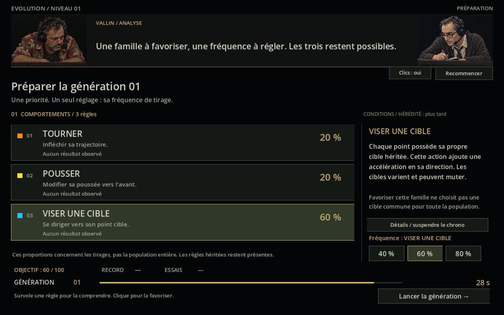
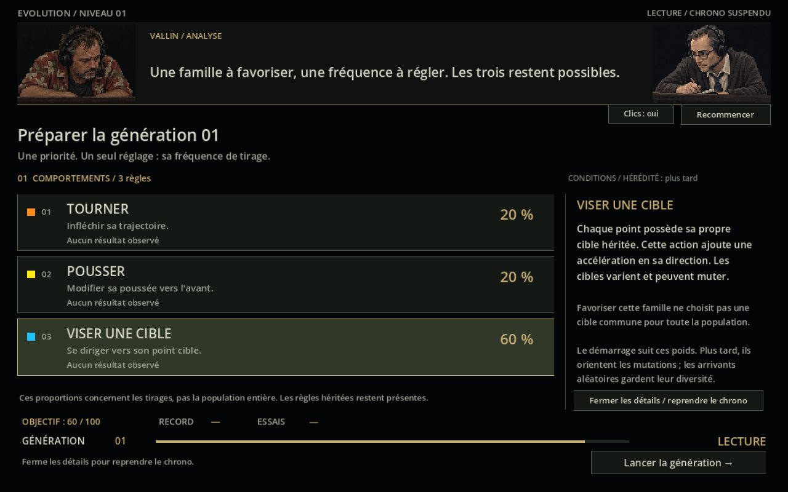
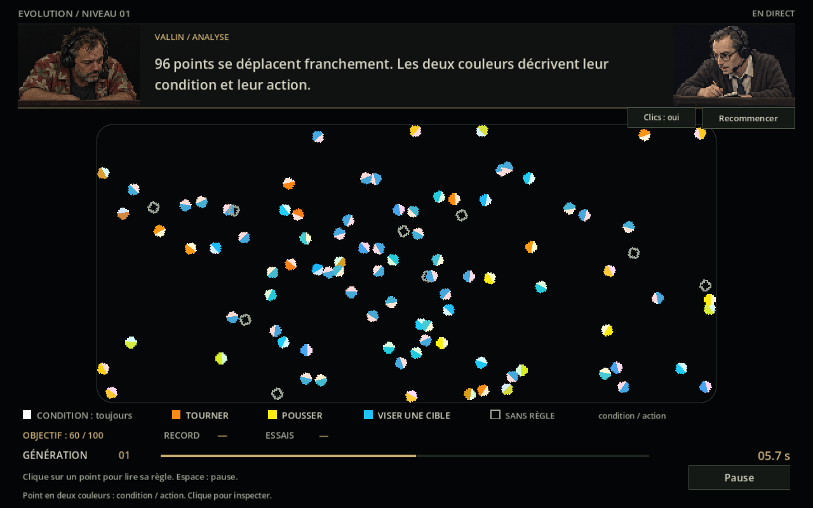
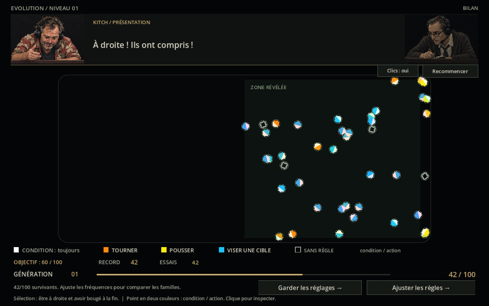
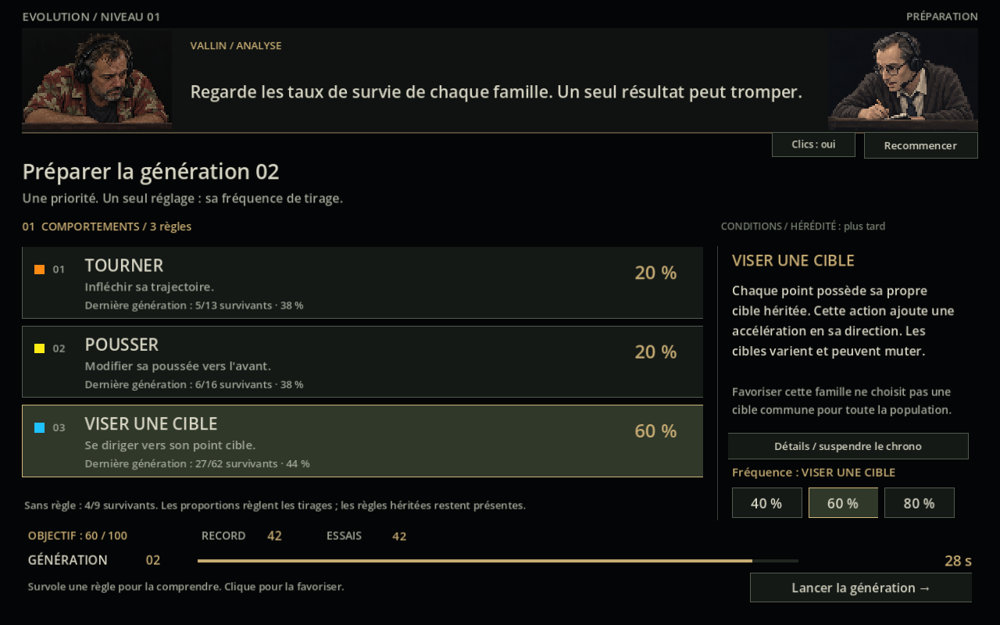
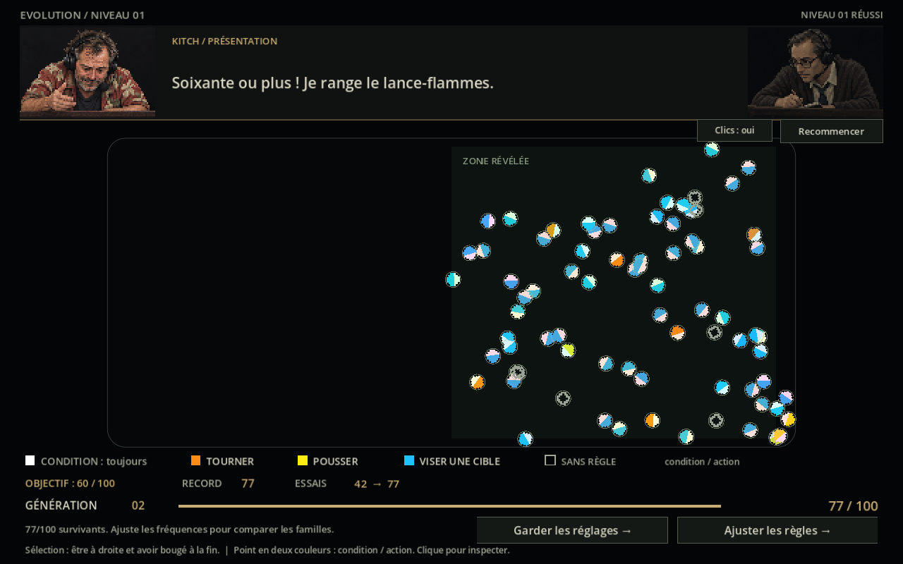
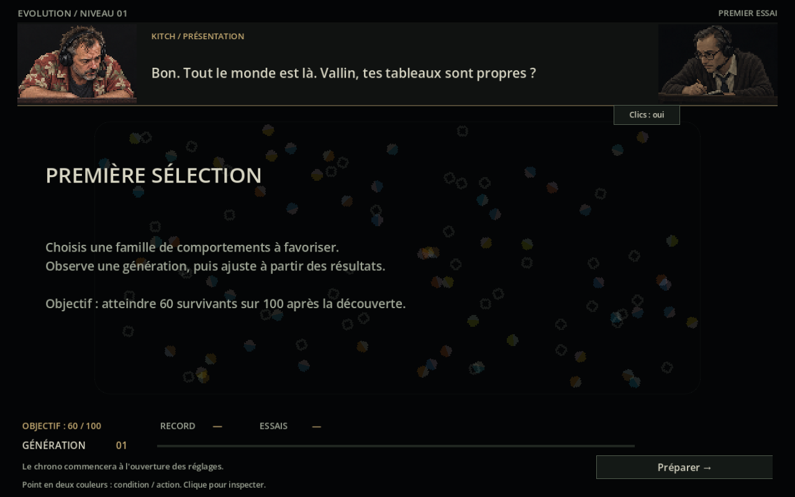
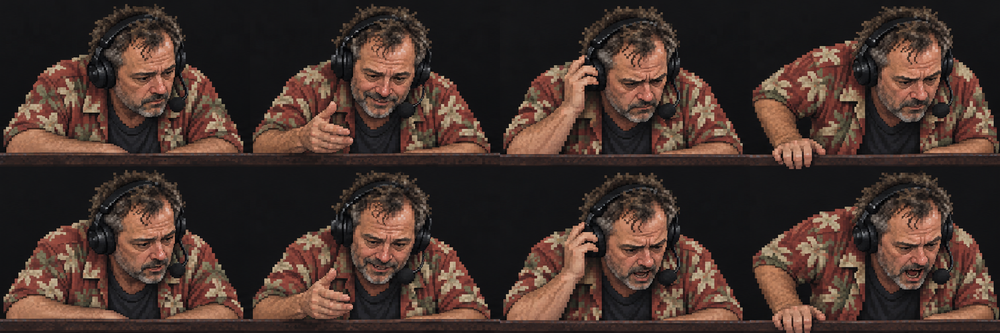
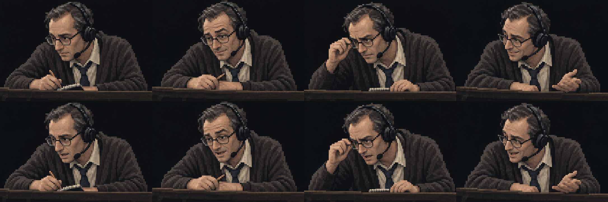

Choisir, observer,
puis améliorer.
Cette révision transforme les trois cartes à activer en trois grandes lignes de règles avec une explication et des résultats. Un seul réglage est exposé : la fréquence d'une famille de comportements. Le joueur découvre la sélection à droite, compare les familles et cherche à atteindre 60 survivants sur 100.
Lanceur WindowsFonctionnement et vérifications
Dans le terminal PowerShell ouvert à la racine :
Trois grandes lignes, une décision lisible

| Choix | Effet réel | Ce que le joueur règle |
|---|---|---|
| Tourner | Biais de rotation hérité. | Une famille prioritaire, puis sa fréquence à 40, 60 ou 80 %. Le reste est réparti entre les deux autres. |
| Pousser | Poussée relative au cap, dont la valeur peut renforcer ou réduire l'accélération. | |
| Viser une cible | Accélération vers une cible propre à chaque point. |
Le pourcentage concerne les tirages génétiques, pas une fraction garantie de la population. Il agit sur le peuplement initial et les changements de famille par mutation. Les règles héritées restent présentes et les arrivants aléatoires gardent leur diversité. Les cibles, leur force et leurs variations continuent d'être héritées et sélectionnées par le moteur.
Comprendre sans subir le chrono

Les couleurs expliquent les points

- Blanc : condition « toujours ».
- Orange : tourner. Jaune : pousser. Cyan : viser sa cible.
- Anneau gris : aucune règle active, mouvement aléatoire.
La couleur indique un comportement. Le moteur conserve aussi des nuances d'accent héritées. Tous les points sont comptés au bilan, y compris les points sans règle.
Découverte et bilan


Un premier objectif atteignable

Les vérifications de balance à priorité constante de 80 % ont atteint l'objectif : tourner à la neuvième génération, pousser à la cinquième, cible à la deuxième. Le parcours déterministe cible a donné 42 puis 79 survivants. Ce sont des premiers repères de balance, à confronter aux essais du joueur.
Kitch et Vallin

Kitch porte une chemise hawaïenne et réagit avec enthousiasme, tension et mauvaise foi. Vallin est un personnage original : lunettes, carnet, français précis et humour sec. René Lecavalier sert de référence de langue et de tenue à la demande de l'utilisateur.
Kitch — « À droite ! Ils ont compris ! »
Vallin — « Ils ont survécu. Nous allons éviter de leur attribuer un diplôme. »
Chaque portrait est rendu à 96 × 64 pixels avant agrandissement sans lissage. Les atlas comportent quatre poses, chacune bouche fermée et ouverte. Un seul personnage parle à la fois, avec texte progressif et bouche animée. Il n'y a pas encore de voix enregistrée ou de synthèse vocale. Les sons actuels sont les clics des boutons.


Vérification
Compilation sans erreur ni avertissement. 132 vérifications passent dans Godot : boutons, survol, détails, chrono, probabilités réelles, pause, découverte, sélection, bilans par famille, ADN parental, descendants, objectif et reset. Les 48 fichiers du moteur repris restent identiques à leurs empreintes SHA-256. Le projet voisin est intact.
Les paramètres du scénario ont été ajustés pour rendre les effets des mutations perceptibles dans ce premier niveau ; ils sont détaillés dans le README. Les captures sont issues du rendu du jeu. Les deux atlas ont été générés avec l'outil intégré image_gen, puis copiés dans prototype/assets.
Prompts exacts des deux personnages · Résultats de vérification